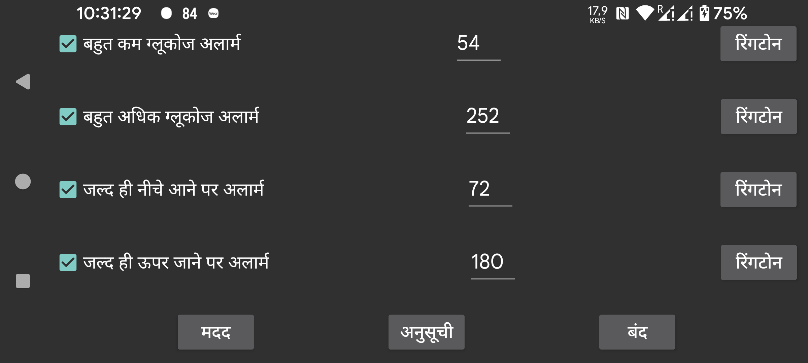

ग्लूकोज मान कम ग्लूकोज अलार्म से भी कम होने पर बजने वाला दूसरा कम अलार्म।
ग्लूकोज मान अधिक ग्लूकोज अलार्म से भी अधिक होने पर बजने वाला दूसरा अधिक अलार्म।
जब गिरते ग्लूकोज से मान जल्द ही किसी मान से नीचे होने वाला हो तब अलार्म।
जब बढ़ता ग्लूकोज जल्द ही किसी मान से ऊपर होने वाला हो तब अलार्म।
दिन के एक निश्चित समय पर एक निश्चित प्रोफ़ाइल को सक्रिय करने के लिए अनुसूचित करें। इस तरह आप दिन और रात के दौरान अलग-अलग ग्लूकोज सीमा या रिंगटोन का उपयोग कर सकते हैं, या रात में ग्लूकोज मान बोलना स्वचालित रूप से बंद कर सकते हैं।